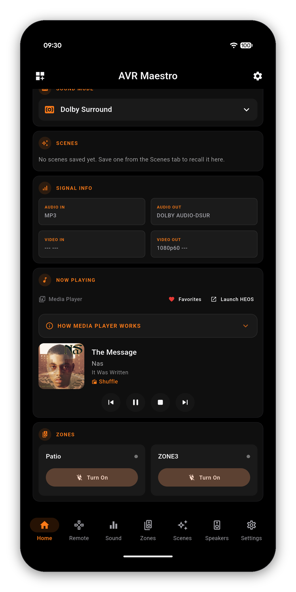
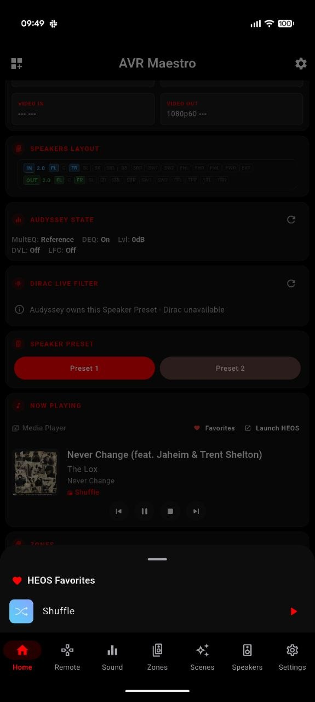

When your source reports metadata, AVR Maestro's Now Playing card puts the album art, the track and the transport right on your home screen - and hands off to HEOS for browsing, then takes back over the moment the music starts.


One-time purchase, no ads, no subscriptions. Connect in under a minute.